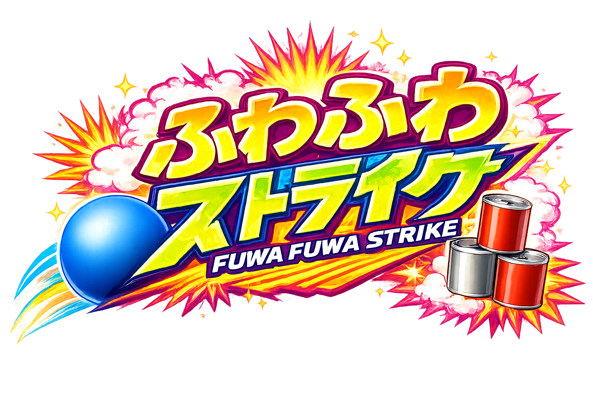

どんなゲーム？
ふわふわボールを 投げて、
的を たおそう！
➜
机の 上に 並んだ 的を ねらってね！
トーナメント
- ・予選 3回
- ・決勝 1回
決勝
勝者
ABC
勝者
DEF
勝者
GHI
2人1組の チームA〜I で 戦うよ！
投げ方・立ち位置
- 5m 先の 的を 2人で 同時に ねらう
- 決められた ラインに 立って 投げる
- 小学生以下は もう 少し 近い ラインから 投げてOK
得点ルール
ダンボールの 的を たおして 得点！
赤い 的
25点
全部で 4つ
茶色の 的
0点
💥
ぜんぶ たおす
（ストライク）
+50点
ボーナス
的の 置き方は いろいろ！
全部 たおすと 150点！
勝負の 決め方
1投目
＋
2投目
＝
合計点
2回投げた 合計点で
トーナメントの 勝ちを 決めるよ！
ご参加ありがとうございます！
19時20分までに
ステージ向かって 左側の壁 にご集合ください！
ステージ
壁
壁
★
←
ここに集合！
観客席